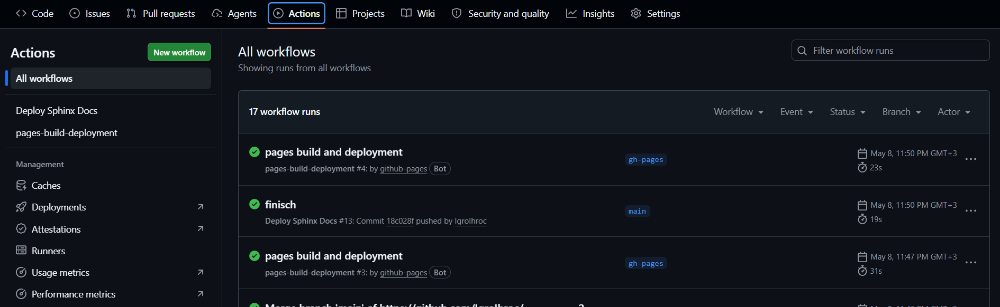
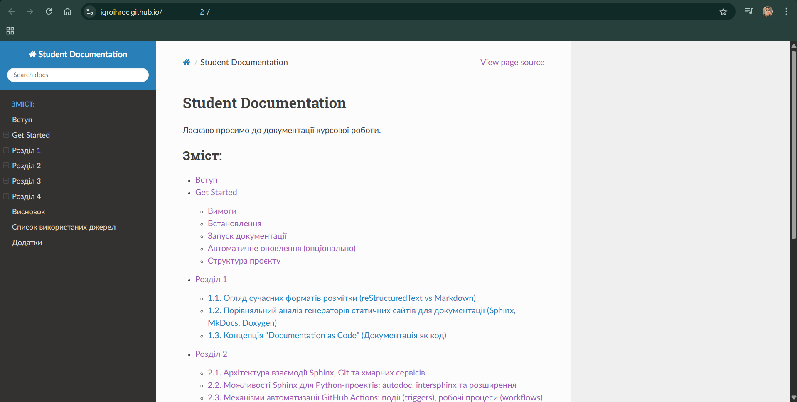

Додатки
ДОДАТОК A
GitHub Actions код YAML:
name: Deploy Sphinx Docs
on:
push:
branches:
- main
permissions:
contents: write
jobs:
deploy:
runs-on: ubuntu-latest
steps:
- name: Checkout repository
uses: actions/checkout@v4
- name: Set up Python
uses: actions/setup-python@v5
with:
python-version: '3.11'
- name: Install dependencies
run: |
pip install sphinx
pip install myst-parser
pip install sphinx-rtd-theme
- name: Build documentation
run: |
cd docs
make html
- name: Deploy to GitHub Pages
uses: peaceiris/actions-gh-pages@v4
with:
github_token: ${{ secrets.GITHUB_TOKEN }}
publish_dir: docs/_build/html
ДОДАТОК В
Sphinx конфіг Код conf.py:
import os
import sys
sys.path.insert(0, os.path.abspath('.'))
project = 'Student Documentation'
author = 'Ilya Holovatyi'
release = '1.0'
extensions = [
"myst_parser",
]
source_suffix = {
".md": "markdown",
".rst": "restructuredtext",
}
templates_path = ['_templates']
exclude_patterns = []
html_theme = 'sphinx_rtd_theme'
html_static_path = ['_static']
html_theme_options = {
'collapse_navigation': False,
'navigation_depth': 4,
}
myst_enable_extensions = [
"colon_fence",
]
ДОДАТОК D
Приклад документації (Index.md) i (selection1.md)
Index.md:
# Student Documentation
Ласкаво просимо до документації курсової роботи.
```{toctree}
:maxdepth: 2
:caption: Зміст:
intro
get_started
section1
section2
section3
section4
conclusion
sources
appendices
selection1.md:
# Розділ 1
АНАЛІЗ ТЕХНОЛОГІЙ ГЕНЕРАЦІЇ ТА ХОСТИНГУ ДОКУМЕНТАЦІЇ ваfg
## 1.1. Огляд сучасних форматів розмітки (reStructuredText vs Markdown)
Вибір формату розмітки є першочерговим завданням при проектуванні системи автоматизованої підготовки документів, оскільки саме він визначає гнучкість структури та можливості подальшої обробки тексту…………………. І тд.
ДОДАТОК E
Скріншоти роботи коду, GitHub Actions , GitHub Pages (сайт), Pull Request.
GitHub Actions (скріншот)
{kind=link}

GitHub Actions
GitHub Pages сайт (скріншот)
{kind=link}

GitHub Pages сайт
Pull Request (скріншот)

Pull Request